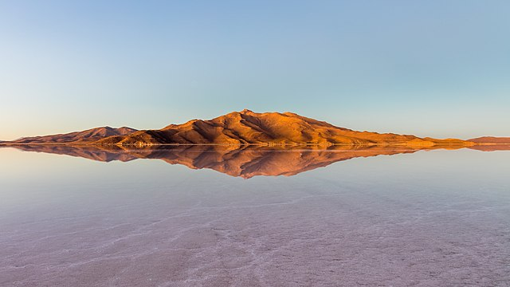

The Mirror of the World
Prospect 2: Bolivia's Salt Flats offer a strange and tranquil scenery unlike any other on Earth. Specifically, Bolivia's Salar de Uyuni is the world's largest salt flat and natural mirror. During its "altiplanic winter" (December to February), a thin layer of rainfall forms a mirror-like surface as smooth as glass (as shown in the image). Though this phenomenon is not assured, there is still much to see, with the salt flat covering over 10,000 square kilometres and reaching an elevation of 11,995 feet for adventurous travelers.
How can you look at this and still claim the city is better.
Did you know?
The history of the Uyuni Salt Flat started between 30,000 and 42,000 years ago, when the area was part of a giant prehistoric lake known as lake Minchin.
The Uyuni Salt Flat however, is very remote 500 kilometres away from the nearest city.